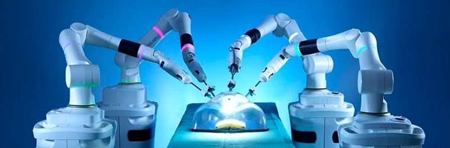

Robotic Surgery
General Overview
Growth in recent years
Robotic assisted surgical procedures have become increasingly common, evolving from a novel and experimental technique into a mainstream practice over the past 25 years. The industry market has been growing steadily, as a result of increased demand for minimally invasive procedures, technology upgrades, and improved patient outcomes. A recent cohort study found that between the years of 2012 and 2018, the use of robotic surgery for all general surgery procedures increased from 1.8% to 15.1% (Jake Young, PhD, MPH, MFA), and is likely to continue to grow its market share to $14 billion globally by 2026 with a compound annual growth rate of nearly 11% (Oliver Wyman, international management consulting firm predicts).
"I use the robot to help patients who have been told that traditional surgery is not an option" Dr. Daniel Eun, Director of Minimally Invasive Urologic Oncology and Reconstructive Surgery at Temple University Hospital
But after all that, what really is robotic surgery? And why?
Robotic surgery is a surgical technique in which specialised technology bearing small surgical instruments is controlled by a trained surgeon to perform the operation. This method is mainly done as it enhances the capabilities of the surgeon as a type of minimally invasive surgery – which in simple words means that procedures can be performed through a series of tiny incisions rather than larger surgical cuts which causes a lot more damage to the body. This avoids the need to push muscle tissue and organs out of the way to prepare for the operation. However, contrary to popular belief, despite the procedure being called ‘robotic’, the robot itself does not perform the surgical procedure on its own accord. Rather, it refers to how one or more robotic arms can be controlled by surgeons remotely operating from a console nearby.
Future Technology
Hardware, software and operations
This technology consists of 3 main components:
- Typically 3, robotic arms carrying surgical instruments with ‘wrists’ at the tip
- An additional arm carrying a high-definition camera that provides an enhanced three-dimensional view of the surgical area on a computer screen, magnifying the tissue and structures of the body tenfold, guiding the surgeon through the procedure
- Finally, the surgical console in the operating room where a surgeon remotely controls the instruments and camera’s every move

How does it work?
Each robotic arm replicates the movements of the human wrist and hand and is controlled by a joystick similar to that used for video game. Using finger and foot controls, surgeons operate all 4 arms while looking through a stereoscopic, high-definition monitor. The robot translates each hand, wrist, and finger movement from the surgeon to guide each instrument in real-time, after scaling each movement down to size. For example, a one-inch movement may be scaled down to a quarter of an inch, demonstrating the extraordinary surgical precision and operative control of this technology.

“Doing it traditionally is very difficult, but the robot, with its wristed instruments, makes it much, much easier,” Stephanie G. Worrell, MD, FACS, section chief of thoracic surgery at the University of Arizona in Tucson said.
What does this mean for us - society and Individuals
Robotic surgery is suitable for many kinds of procedures, most frequently used by surgeons and urologists to treat a range of medical conditions affecting the heart, digestive system, bladder, prostate and more. Surgeons are now able to get a better look and operate on sections of the body that were previously exceedingly difficult to access or completely inaccessible, due to its superior dexterity in comparison to conventional laparoscopic or minimally invasive surgery. Robotic surgery allows a surgeon maximum range and precision of movement which makes it (so much more easier) for surgeons to perform many delicate and complex procedures that are extremely difficult or impossible with other methods, such as microsurgery, which involves removing a piece of tissue – with its nerves, blood and lymphatic vessels, from one part of the body to use it in the reconstruction of another area damaged by trauma or disease.
Today's Robotic Surgery
Existing products
The most established corporation in the market of robotic surgery is Intuitive Surgical. They are considered a pioneer in robot-assisted surgery and the maker and founder of da Vinci™ surgical systems (1995). There have already been 4 generations of da Vinci systems and it is widely used currently in various professional locations across the globe including the University of California and NYU Langone. Today, the company continues to develop, manufacture and market robotics systems and products, and now controls more than two-thirds of the market.

Advantages of Robotic Surgery
- Often has fewer complications - for example, lower risk of surgical site infection due to less tissue trauma
- Less pain and reduced blood loss during the procedure
- Smaller, less noticeable scars and better cosmetic outcomes
All of these meaning patients have an easier and faster recovery compared to traditional surgery.
- Reduced pain and discomfort after surgery
- Can get out of bed shortly after anaesthesia wears off
- Shorter hospital stay - can go home the same day or following day after surgery
Surgeons also have an easier job:
- Increased range of motional and flexibility for surgeon
- Improved visualisation of surgical site
Disadvantages
- Involves risk, some are similar to risks of conventional open surgery such as risk of infection and other complications. In the case of complications the procedure may also need to be converted to an open procedure with larger precisions. For example, as a result of scar tissues from previous surgeries that make it difficult for robotic technology to complete the procedure
- Risk of nerve damage and compression
- Robot technical malfunctions, though extremely rare, can occur e.g. robot failure, instrument failure, loss of communication
Cost is a major factor
- Robotic surgery is only available in medical centres that can afford the technology and have specially trained surgeons
- Surgeons require specialised training to operate surgical robots, which is time-consuming and costly
- Robot surgery can be expensive, which may limit access for some patients who cannot afford it
Inexperience of surgeons increases human error
- The technology is fairly new, so some surgeons will have limited experience with surgical robots, which increases risk of errors during surgery
Ethical Issues
The primary concern with robotic surgery is the question, which party should take responsibility for a patient injured as a result of the error of a surgical robot?
Importance of Informed consent
First of all, it is crucial patients have fully understood the implications of robotic surgery before providing informed consent. Not only does acting without informed consent from the patient about the implications of robotic surgery stand as an ethical issue on its own, but it also complicates whose responsibility it will be if the robot makes an error and the patient is harmed.
Informed consent processes require additional considerations that ensure patients receive complete and accurate information about the capabilities of the technology and potential risks, and that they are aware of the fact that their right to make voluntary informed decisions about their personal healthcare is respected. For example, the risk of a robotic malfunction, though minimal, should be disclosed, as well as the exact steps in the surgery that would be robot-assisted, and the advantages, risks and alternative surgical options. The surgeon’s experience and training in robotic surgery as well as the number of robotic procedures previously performed by the department should also be communicated. Therefore, patients should be fully aware and comfortable with the possible risks before going ahead with surgery.
"The STAR performed the procedure in four animals and it produced significantly better results than humans performing the same procedure." said Axel Krieger, Assistant professor of mechanical engineering at John Hopkins University
Possibility of robots taking over surgeons’ jobs
As of today, only non-autonomous robots are being used in real surgical procedures. Unfortunately, these surgical robots have not met the expected or desired outcomes that were claimed when they were invented, as surgeries are still just as inefficient and expensive as before. Due to these tools still having to be controlled by humans, the surgeon has to carefully carry out each task and control each movement of the tool which causes surgeries to take longer than traditional methods. Expanding on this, longer surgeries lead to increased working hours of surgeons and fewer surgeries a year which is problematic even if the surgery is more precise. A possible solution (but with its own flaws) for this would be autonomous surgical robots, which have been developing by technical scientists.
Robots replacing surgeons’ jobs is another ethical issue, one that builds on from the previous overarching question and one becoming increasingly relevant as technology continuously progresses. Despite most robots, including the Da Vinci surgical robot being an example of non-autonomous surgical robots, as of 2022, scientists (from John Hopkins University) have developed a robotic surgeon that can perform without any human guidance. Their autonomous robot surgeon STAR – Smart Tissue Autonomous Robot proved to be capable of performing at a higher level than a human surgeon with the task of connecting two ends of an intestine in a laparoscopic procedure. STAR has been considered the first robot with capability to plan and execute a surgical procedure with virtually no human intervention, and it has even gone as far as being able to react and adapt to cope with unexpected challenges during surgery.

So, who is to blame?
As demonstrated above, autonomous surgical robots have the ability to make surgeries more precise and time efficient as a result of their autonomy. Surgeons are also relieved of the stress of making difficult decisions and carrying out the surgery under immense pressure as those processes will all be handled by the robot, which will undoubtedly save time and the money required to hire these surgeons. But this raises the question again, of whether it is ethical to replace these surgeons with robots even if there would be no tasks that specifically require the human surgeon to execute. Additionally, it could be argued that the surgery would be made safer with human error eliminated.
The use of this type of robot, however, will generate liability problems as robots are making decisions independently, without any human intervention. Consequently, the wrong decision may be made by the robot, due to mechanical or technical failure, and cause damage in some way. In this way, it is unclear how the question of liability should be addressed as there is no direct human involvement in the events causing the failure, and the robot itself could not be held liable as it has no legal personhood. Thus, the problem arises again of who should be held responsible and liable if a patient is harmed by an autonomous robot, as it is unclear due to the variety of people indirectly involved with the safety of the robot, such as the manufacturer, if there were issues with design or software that led to these mistakes, the surgeon, as a result of lack of hands on training, or even the patient as they would have provided consent knowing the potential risks so they should be responsible for their own decisions.
Acceptance of Robotic Surgery
Robotic surgery is currently a widely accepted surgery technique in the medical industry and acceptance and utilisation of robotic surgery has grown among health professionals as well as patients. This technology is being adopted by a growing number of hospitals and healthcare institutions worldwide, and more surgeons are receiving specialised training in robot assisted techniques along with more facilities investing in such robotic systems. The safety, efficiency and cost-effectiveness of robotic surgery is being supported by a growing amount of research and clinical evidence which has helped build confidence and trust from the public in the operation of robotic surgery systems and technology.
“Certain things can be automated, but I think a surgeon will always need to be involved,” Dr Worrell said
However, some with a more traditional mindset may object to the idea of a robot taking the place of a human, which is a fair perspective due to the strengths and shortcomings in this evolving technology. There is though, a relatively unlikely chance that doctors or other health professionals will be replaced by robots for reasons such as patients want the emotional connection to a human when they are sick and vulnerable, and the fact that situations can change, and thus predictions can’t be made beforehand to program the robot with how to react. Therefore, in order to ensure acceptable use of robotic surgery, patients should always be fully informed and if not, educated about all the implications of robotic surgery, and ultimately given the freedom to choose whether this technology is acceptable to them.
Wrapping up
This technology will undoubtedly see a growth now and into the future, offering promising patient and benefits to the medical industry. It also presents complex ethical considerations, emphasising the importance of respecting patient autonomy and informed consent. Hence, as medical technology advances, it is crucial for ethical medical practice to be maintained for the benefit and future of the whole society.
References
Cleveland Clinic. (2021). Robotic Surgery: Robot-Assisted Surgery, Advantages, Disadvantages.. Cleveland Clinic. https://my.clevelandclinic.org/health/treatments/22178-robotic-surgery
Intuitive. (2023). About da Vinci Systems.. Intuitive.com. https://www.intuitive.com/en-us/patients/da-vinci-robotic-surgery/about-the-systems
Intuitive Surgical. (2019). Intuitive | da Vinci | Robotic Surgical Systems.. Intuitive Surgical; Intuitive Surgical. https://www.intuitive.com/en-us/products-and-services/da-vinci
Jan 26, C. G. / P., & 2022. (2022, January 26). Robot performs first laparoscopic surgery without human help. The Hub. https://hub.jhu.edu/2022/01/26/star-robot-performs-intestinal-surgery/
Pasquale, F. (2020, November 9). When medical robots fail: Malpractice principles for an era of automation. Brookings. https://www.brookings.edu/articles/when-medical-robots-fail-malpractice-principles-for-an-era-of-automation/